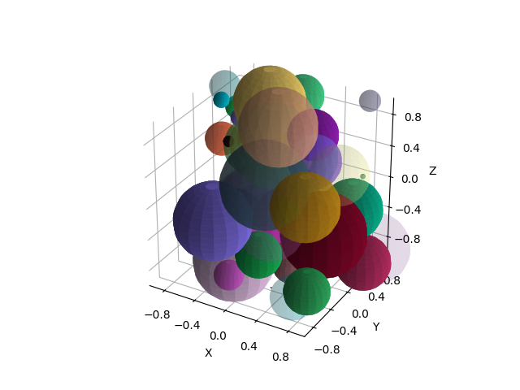

Note
Click here to download the full example code
Plot Multiple Spheres¶
Benchmarks plotting of multiple spheres at once and compares it to plotting each sphere individually.
n_spheres single multi speedup
50 0.5053970813751221 0.07423973083496094 6.807636230506384
import numpy as np
import matplotlib.pyplot as plt
from pytransform3d.plot_utils import plot_sphere, plot_spheres
import time
n_spheres = 50
random_state = np.random.default_rng(0)
P = 2 * random_state.random((n_spheres, 3)) - 1
radii = random_state.random(n_spheres) / 2
colors = random_state.random((n_spheres, 3))
alphas = random_state.random(n_spheres)
start = time.time()
plot_spheres(p=P, radius=radii, color=colors, alpha=alphas, wireframe=False)
end = time.time()
time_multi = end - start
start = time.time()
for p, radius, color, alpha in zip(P, radii, colors, alphas):
plot_sphere(p=p, radius=radius, color=color, alpha=alpha, wireframe=False)
end = time.time()
time_single = end - start
speedup = time_single / time_multi
print("n_spheres", "single", "\t", "multi", "\t", "speedup", sep="\t")
print(n_spheres, "", time_single, time_multi, speedup, sep="\t")
plt.show()
Total running time of the script: ( 0 minutes 1.229 seconds)